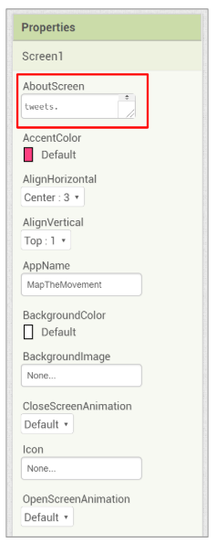
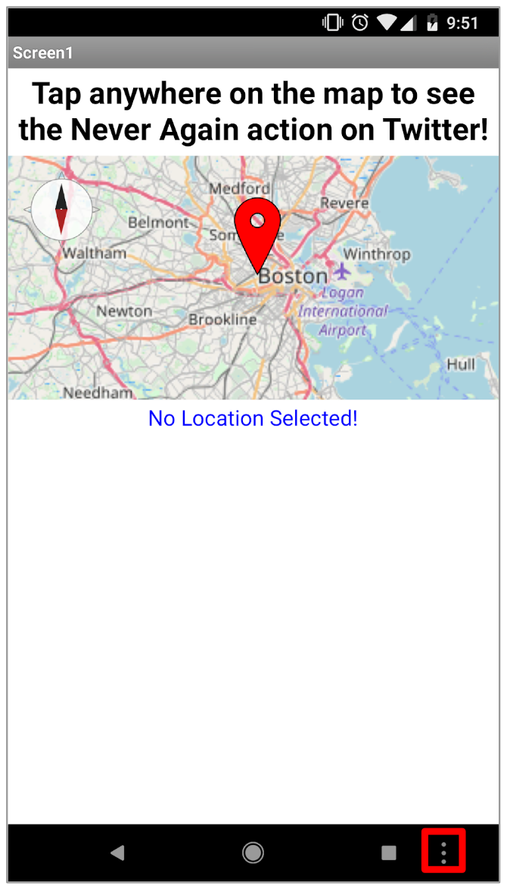
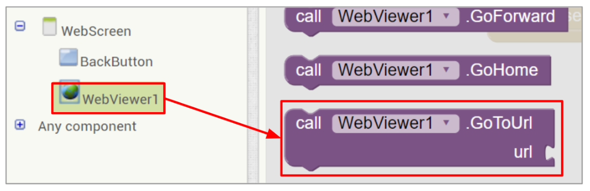
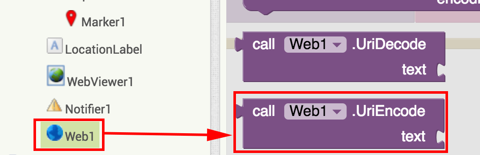
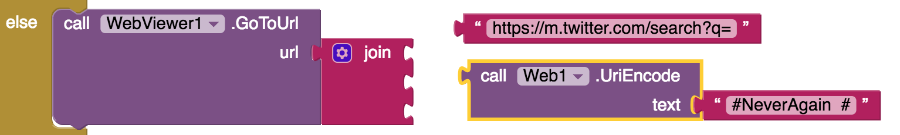
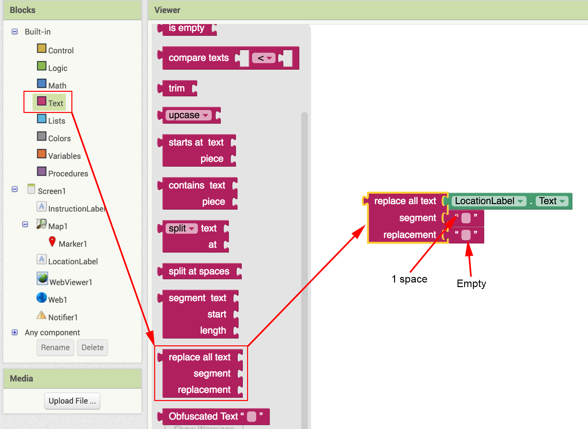
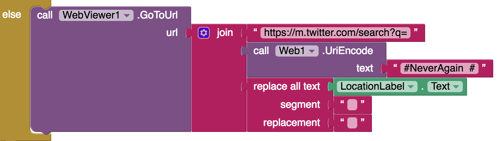

The Challenge
On the street, at government offices, and via social media: young people are grappling with school shootings and gun violence on a national scale. They're sparking new conversations and organizing for change.
YR Media has created an interactive tracker of student-led action, starting with the tragic shooting at Marjory Stoneman Douglas High School in Parkland, Florida in February 2018.
You're challenged with creating an app that shows what's happening on Twitter in any given location on a map. Tapping on the map will show any #NeverAgain tweets from that location (i.e. for example tweets that have both #NeverAgain and #Boston). From there, you can extend the app by picking a hashtag of your choice to plot on a map.
Click "Connect your App" below to start building your app!
Connect your App
Map the Movement (Level: Advanced)
Add Components
We've started with a blank app, and need to add components.
From the User Interface palette, drag in two Labels, a Notifier, and a WebViewer.
Rename the labels to InstructionLabel and LocationLabel.
From the Maps palette, drag in a Map component, and a Marker component. Make sure the WebViewer component is at the bottom of the app.
Finally, from the Connectivity palette, drag in a Web component.

Modify Component Properties
Change the text of the InstructionLabel to say 'Tap anywhere on the map to see the Never Again action on Twitter!'
Change the text of the LocationLabel to say 'No Location Selected!'
Experiment with the text properties of the two labels until you find something you like. Adjust the map and webviewer to comfortable sizes as well. A sample layout is shown below.
Remember, to center all components, set the AlignHorizontal propery of Screen1 to Center!

Change "AboutScreen" Property
In the Screen1 properties, there's something called AboutScreen.
Let's use that to give instructions on how to use this app.
Fill in the property with something like: "Click anywhere on the map. #NeverAgain tweets from that location will appear below! Scroll to see more tweets."
You can access the "About Screen" information by clicking on the three dots icon, highlighted in the below screenshot, and then clicking "About this application".
Introduction to API's
An API is an Application Programming Interface.
Just like every sport has a playbook, every web application has an API (a rulebook) for users (or players). API's provide the rules for how to speak to specific applications.

In this tutorial, we will use an API provided by Open Street Map. This API will allow us to convert a latitude/longitude to a town or city.
There are multiple ways to communicate with an API. Here, we will be using a method called "get".
Blocks
Switch to the Blocks Editor.

From the Map1 drawer, drag in a when Map1.TapAtPoint block.

Set Marker
From the Marker1 drawer, drag in a call Marker1.SetLocation block.

Fill in the latitude and longitude of the new block with the latitude and longitude from the Tap block and snap the call Marker1.SetLocation block into the when Map1.TapAtPoint block.

SetLocation block will move the Marker1 to the latitude and longitude where the user tapped on the map.
Construct API Call
From the Web1 drawer, drag in the set Web1.Url block, and snap it under the SetLocation block.

From the Text drawer, drag in a join block as well as a few empty text blocks. Mutate the join block to have five sockets rather than two.

Fill in the five sockets of the join block as follows:
- https://nominatim.openstreetmap.org/search?format=jsonv2&q=
- get latitude
- ,
- get longitude
- &addressdetails=1

Make API Call!
From the Web1 drawer, drag out a call Web1.Get block, and snap it under the set Url block.

Parse Web Response
From the Web1 drawer, pull out a when Web1.GotText block.
There are four values available. The one we care about is responseContent, which contains the full "answer" from the API.

Pull out a set LocationLabel.Text block and snap it into the GotText block.

Look Up In Pairs
The look up in pairs block assumes that we are searching through a list of key-value pairs. This block takes three inputs: a key to search for, the pairs to search through, and what to return if the key is not found (and therefore there is no value to return).
In this project, we will search through pairs returned by the API for a key called "city". If "city" is not available, we want to search for "town". If neither is available, we will search for "county". If there is no county available, then we will return an error.
From the Lists drawer, drag in the look up in pairs block and snap it into the set text block.

JSON Text Decode
The API response content is in a format called "JSON" (pronounced 'jay-sohn').
From the Web1 drawer, pull out a call Web1.JsonTextDecode block. Drag get responseContent into this new block.
This will turn the response from JSON into lists that we can manipulate with App Inventor.

What does that response look like, as a list?

It will take some complicated parsing to extract the feature we are looking for--that is, the name of the town that we just clicked on.
Getting the City/Town Name from the Response Content
With the combination of select list item and look up in pairs, we can pull out the city name from the response content. If the city cannot be found, we will use the same process again to find the town name. If there is no town name either, then we will return the county name. Finally, if no county name is found, then we will return an error.
Drag in five more look up in pairs blocks.
Drag in three select list item blocks.
Drag in ten empty text blocks and three number blocks.
Finally, duplicate the JsonTextDecode block two more times.

Parsing Response Content, Continued
Now we have all the blocks--let's snap them all together.
Set all three number blocks to 1.
For the text blocks, there should be four blocks that say error, three that say address, one that says city, one that says town, and one that says county.

By setting the not found parameter to another look up in pairs block, we can search for multiple values if one is not found, similar to how a switch statement works in other languages.
Following the images below, connect all the blocks together.


Test for Error
Drag in an if then block, and mutate it into an if then else block. Snap it in under the set LocationLabel.Text block we just built.
Drag out an = block from the Logic drawer.
From the LocationLabel drawer, drag out a LocationLabel.Text block and snap it into the first socket of the = block.
Set the second socket of the = block to error.
In the then socket, drag in a call Notifier1.ShowAlert block. Set the notice to Error finding location! Try tapping somewhere else.

Display Tweets!
If there's no error, then we can show tweets from the location that we parsed.
Now you will be doing a slightly different kind of API call with the WebViewer component, where you will construct a query to Twitter that will display the results directly in the app.
Drag out a call WebViewer1.GoToUrl block, and snap it into the else part of the if-then-else block.
Drag out a join block, and mutate it to have three sockets. Snap it into the GoToUrl block.
In the first socket, enter:
https://m.twitter.com/search?q=.
Special characters like # & % might conflict with the URL request and need to be encoded to avoid conflicts. Because we are searching for hashtags like #NeverAgain #Boston, we need to encode that part of the search string.
For the second socket: go to the Web drawer and drag a UriEncode block.
and snap to its socket the text "#NeverAgain #" as shown. This will go into the second socket of the join block.
For the third socket, we need to make sure that the location name doesn't have any spaces in it. We will do this in the next step.
Remove Spaces from Location Name
Drag out a replace all text block and snap it into the third socket of the join block of the previous step.
From the LocationLabel drawer, drag out a LocationLabel.Text block and snap it into the first socket of the replace all text block.
In a new empty text block, enter a space character. This goes into the segment socket.
In a new empty text block, make sure it is completely empty--no spaces. This goes into the replacement socket.
Here is what the entire code block should look like:
Test!
When you tap on the map, WebViewer component should navigate to Twitter and display a list of #NeverAgain tweets from that location. Does your app work?

If you would like to learn more about API's you can check out the chapter titled Communicating with the Web from USF Professor David Wolber's book App Inventor 2: Create your own Android Apps.
Expand your app
Remember where we put in "#NeverAgain" as a search term in your code? Can you figure out how to alter your code to search for a different hashtag?
Use a TextBox to change the search terms.Now, rather than manually changing the code each time, what if you changed the hashtag to whatever is in a TextBox?
You know how to use a Button. You know Latitude and Longitude. Can you figure out how to make a button that jumps to a random location?
Create Buttons to Zoom In or Zoom Out.Play with the Map Properties to figure out how to zoom in and out of the map. Can you make corresponding buttons?
Create Different Search Options.Now that you know how to do a Twitter search, what other ways can you expand on this? Do you have to search via hashtag? What other search options can you use?
About Youth Mobile Power
A lot of us spend all day on our phones, hooked on our favorite apps. We keep typing and swiping, even when we know the risks phones can pose to our attention, privacy, and even our safety. But the computers in our pockets also create untapped opportunities for young people to learn, connect and transform our communities.
That’s why MIT and YR Media teamed up to launch the Youth Mobile Power series. YR teens produce stories highlighting how young people use their phones in surprising and powerful ways. Meanwhile, the team at MIT is continually enhancing App Inventor to make it possible for users like you to create apps like the ones featured in YR’s reporting.
Essentially: get inspired by the story, get busy making your own app!

The YR + MIT collaboration is supported in part by the National Science Foundation. This material is based upon work supported by the National Science Foundation under Grant No. (1614239). Any opinions, findings and conclusions or recommendations expressed in this material are those of the author(s) and do not necessarily reflect the views of the National Science Foundation.
Check out more apps and interactive news content created by YR here.